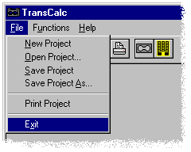

Getting Started
Step 10
Exiting TransCalc
To exit TransCalc, press the Exit BUTTON on the TOOL BAR, or select the Exit command in the File Menu

Back to the beginning ...
 BUTTON on the TOOL BAR, or select the Exit command in the File Menu BUTTON on the TOOL BAR, or select the Exit command in the File Menu
BUTTON on the TOOL BAR, or select the Exit command in the File Menu BUTTON on the TOOL BAR, or select the Exit command in the File Menu